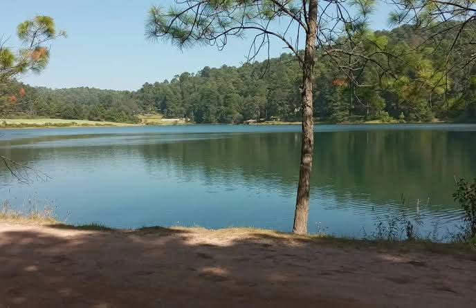
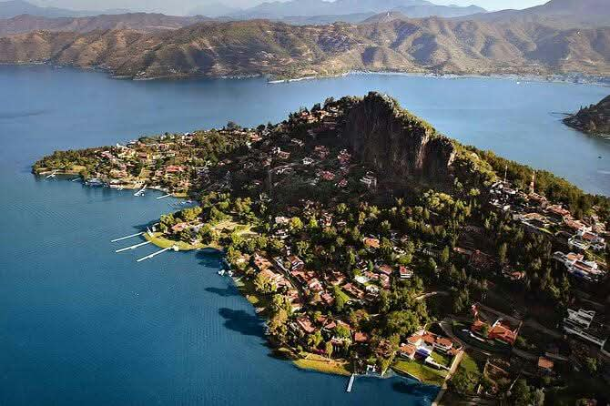

En el lugar (Laguna Negra), ella explica que es un sitio turístico muy popular. La gente llega principalmente en rezers (vehículos 4x4 / off-road), motocicletas y también a pie, aunque el camino es largo. Desde Valle de Bravo se tarda aproximadamente 1 a 2 horas. Información adicional precisa sobre el lugar Laguna Negra es una laguna natural ubicada en zona boscosa de pino. Está cerca de la comunidad de Pinal del Marquesado y se conecta con rutas que llevan hacia Colorines y Otzoloapan.

La zona forma parte de las rutas de aventura que se consideran una extensión natural de las actividades de Valle de Bravo y Avándaro. Hay varias rutas registradas en plataformas(por ejemplo, Avándaro, Laguna Negra, Otzoloapan o Cerro Gordo, Laguna Negra).
